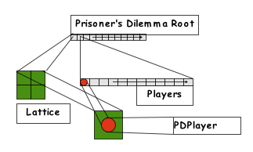
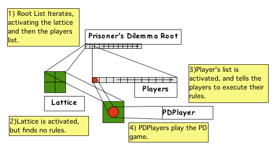
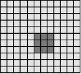
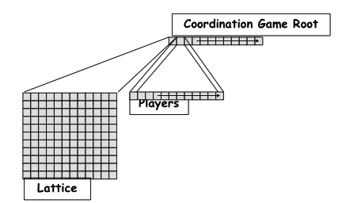
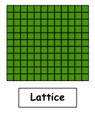
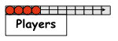
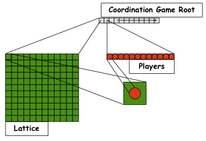

The Ascape Model Developer’s Manual
Section 2.
The Ascape Modeling Framework
Section 1. Agent-based Modeling
Section 2. The Ascape Modeling Framework
2.1 The Basic Structure of an Ascape Model
2.2 Constructing the Agent Scapes
2.2.1 Specifying agents in the model
2.2.2 Specifying the execution order
2.2.3 Specifying statistical operations
2.2.4 Additional scape graph properties
2.3 A First Introduction to Ascape Code
2.3.1 The basic framework for a coordination game model
Section 3. The Ascape Tutorial
The Ascape agent-based modeling framework has been developed to support the key ideas of agent-based modeling that were presented in Section 1. Ascape is designed to help the modeler make ready use of the concepts of cells, cell occupants and local neighborhoods in order to allow her to quickly start creating agent-based models. In what follows, we will walk through the general structure of an Ascape model, allowing the new Ascape developer to understand the Ascape framework before beginning to build models in the tutorial in Section 3.
The Basic Structure of an Ascape Model
The Agent is the basic structure in Ascape. All of the Ascape objects that we will be concerned with are formally Ascape agents. So far, we have concerned ourselves with cells and cell occupants. Both of these kinds of agents are basic Ascape agents; however cells and cell occupants live inside of collections, and these collections are agents as well. The lattice that the cells comprise is an agent that holds cells. The structure that holds the cell occupants, whether it is called an array, a list, or, more intuitively, a collection, is also an agent.
In a fairly basic Ascape model, a collection of cell agents is owned by a lattice agent, and a collection of cell occupant agents is owned by a list agent. In such a model, the lattice and the list sit in the background as containers, and the cells and cell occupants do all of the work. However, this need not be the case, as lists and lattices can interact with each other as agents embedded in still larger structures. As an example of a simple model, consider the prisoner's dilemma model. In this model, the lattice contains a list of cells that are specifically designed for hosting cell occupants. These 'Host Cells' do not do any work, but simply sit inside the lattice agent. The lattice agent itself is also inert in this model. There is also a list agent, called "players", that contains all of the cell occupants agents that are in the model. This list 'holds' the rules for all of its members and when it is activated it tells all of its member agents to execute these rules.
Prisoner's Dilemma Model Structure:

The basic structure of an Ascape model is a container, or list, called the Root. If you imagine a Chinese doll, the model Root is like the largest doll. Each doll that it contains may have still other dolls within it. And, as expected, each layer of the nesting is considered an agent. As you might guess, this means that the model itself is the largest agent. As an agent, the model has one rule: iterate. It executes this rule, and activates its sub-agents. In the Prisoner's Dilemma model, the Root will first activate the Lattice (because, it just so happens it was added first, and so it is in the first position), and then it will activate the players list. When the lattice is activated, it looks to see if it has any rules for its agents. If so, then it tells each agent to execute. In this case, it does not, so it does nothing. When the player's list agent is activated, it looks to see if it has any rules for its agents, and then, in turn, it activates them and they each execute the set of rules.
Activation Chain:

Ascape’s term of art for a collection of agents is a ‘scape’. Intuitively, this means that the basic structure of an Ascape model is nested scapes. In the Prisoner's Dilemma model, the Lattice scape is a collection of cell agents, and the Players scape is a collection of cell occupant agents. The model itself, Prisoner'sDilemma, is a Root scape that contains two elements (or agents).
For any scape that a developer will create, there are three basic properties that should be assigned to it.
Specifying Agents in the Model
In Ascape, agents are created by writing a Java class that describes their properties and behavioral rules. When a developer is writing a new class for an agent, she begins by creating a subclass of an existing agent class. The reason for writing a subclass is that all of the properties of the parent class, or superclass, are inherited by the subclass. In general, the base class for any agent is the Cell class. Host Cells, Cell Occupants, Scapes, and Lattices are all subclasses of the Cell agent.
It will seem strange at first that the Cell agent is more primitive than the Scape agents, because, for example, a Scape agent is a container for Cell agents. However, the key to using Ascape is to appreciate that Scapes can behave like Cells. The formal class hierarchy is as follows:
-Agent
-Cell
-Host Cell
-Cell Occupant
-Scape
This hierarchy structure also means that a Scape, since it is a subclass of Cell Occupant, can reside on a Cell. And, since the Scape is a subclass of Cell, each of the member agents for a Scape Graph could be themselves be Scapes. This hierarchy in which Scapes are subclasses of Cells and Cell Occupants is the formal implementation of the idea that scapes are ‘fully-fledged’ agents that can interact with one another, and with their parent scapes, just like Cell and Cell Occupant agents. Once a developer understands that the rules that iterate through a scape can apply to any kind of agent that belongs to that scape, she understands how to develop models in Ascape. For a more complete view of Ascape’s class hierarchy, consult the API documentation included in the download.
Specifying the Execution Order
All scapes (both the scape graph and all of the scape lists) have a function that allows the developer to set the execution order for the agents in the scape. The execution order determines whether the behaviors of the agents in the model are performed synchronously or asynchronously. So, for example, let us say that all of the pdplayer agents have the following set of rules:
If the scape list Players executes in RULE_ORDER, then the agents will perform their behaviors synchronously. Each agent will pick a random neighbor. Once every agent has picked a random neighbor, then every agent will play the PD with that neighbor. Once every agent has done this, then every agent will move to a new spot. So, in this case, all agents perform their rules in synchronization (synchronously). Everyone is picking, playing, and moving at the same time. If the scape list Players executes in AGENT_ORDER, then the first agent in the Players list will pick a random neighbor, play that neighbor, and move to a new spot. Then the next agent in the Players list will also perform this set of rules. This continues until all agents have performed the full set of rules, and then Players starts a new iteration with the first agent again. In this case, the agents perform their rules asynchronously, since an agent (B) selected later in the iteration through the Players list may actually choose to play an agent (A) that had been selected earlier in the iteration, and has recently moved into B’s neighborhood.
Specifying the execution order simply involves using the setExecutionOrder() function for each scape.
Specifying the Statistical Operations
Statistical operations are an important way of getting information about the contents of a scape. There are a range of operations available, and the developer can always extend existing operations to create new ones. In a simple example from the PD model, we may want to chart the number of cooperators against the number of defectors. A simple statistical operation would be to count the number of agents in the ‘Players’ scape that are red, and to name this statistic the ‘number of defectors’. Similarly, we can count the number of agents in ‘Players’ that are blue, and plot this statistic as the number of cooperators.
A more sophisticated statistical operation, also from the PD model, would be to record the wealth of each agent that satisfies a basic condition (such as being red or blue), and then to average the sum of these values. So, for the ‘Players’ scape, we would make a statistical operation that records the wealth of every red agent, and then divides through by the number of red agents. Similarly, we could do the same with the blue agents. We can then graph these values, and see the average payoff for cooperating versus the average payoff for defecting.
In addition to the three basic properties of every scape, there are also properties that are particular to different kinds of scape graph. In this case, we are working with a 2-dimensional lattice. First of all, since the scape graph determines the geometry of the neighborhoods in the model, this needs to be set explicitly by the developer upon the creation of the lattice.
As explained in Section 1, there are two basic kinds of neighborhoods in a 2-dimensional lattice: The Moore neighborhood includes the eight cells immediately surrounding a cell, and the Von Neumann neighborhood includes the four cells that border along the top, bottom, right, and left of a cell.

Moore Von Neumann
Fig. 19: Moore and Von Neumann Neighborhoods
As mentioned earlier, different kinds of neighborhood geometries might be used, and some models forego the spatial geometry altogether and rely upon a network graph as the basic structure of the lattice. These latter kinds of models, so-called ‘networks models’, will be introduced in the tutorial in Section 3.
A final property of the scape graph that needs to be set by the developer is the actual dimensions of the scape graph. Usually the developer creates two variables, ‘lattice_height’ and ‘lattice_width’, and uses these to create the dimensions of the lattice.
A First Introduction to Ascape Code
Before starting the tutorial in Section 3, it will be helpful to get an overview of how the Ascape code base is structured. Ascape is essentially a set of Java libraries that easily allow the developer to make collections of agents (i.e.,. scapes) and to specify rules for the agents’ interactions with one another. There are about 150 Java files, totaling about half a million lines of code, in every Ascape model. Happily, in order to create an Ascape model, a developer only needs two write a minimum of two Java files, totaling about 50 lines of code.
The two basic files that every model requires are:
In what follows, we will create the basic framework for an Ascape model. This will involve creating the first required file, the model class, and it will illustrate how to implement the basic structural features discussed above. In the tutorial in Section 3, we will develop this framework into a fully functioning model, and show how to expand on it.
The Basic Framework for a Coordination Game Model
A good example model, similar to the Prisoner’s Dilemma model from Section 1, is a model of a basic coordination game. In the Coordination Game model, agents try to coordinate on a simple activity. Let us say that agents want to coordinate their choice of colors. The payoff matrix, shown below, indicates that agents are paid equally well for coordinating on red or blue. Their payoff is poor, however, if they fail to coordinate with the other player.
Red Blue
Red 1, 1 0, 0
--------------
Blue 0, 0 1, 1
Coordination Game Payoff Matrix.
The agents in the coordination game model will be cell occupant agents that walk around the lattice and play one another. Among their properties, these agents will have access to the above payoff matrix, they will have a memory of their five most recent plays, and they will have a set of rules telling them how to play and move around the lattice.
To create the basic framework for the model, we need to create the first of the two required files mentioned above: the class that defines the model. Let us call this class “CoordinationGame.java”.
In standard Java, the CoordinationGame class is defined with the following line of code:
public class CoordinationGame extends Scape {
}
The CoordinationGame class uses the Java keyword extends t o make it a subclass of the Scape class. As discussed above, a scape list is a container that holds different kinds of agents. Because the class CoordinationGame is a subclass of Scape, it will inherit all the basic properties of a List. To construct the Coordination Game model we simply need to add a scape graph and some agents to the CoordinationGame class. Thus, CoordinationGame class is the Root Scape for the model, and will contain a scape graph containing cell agents and a scape list containing cell occupant agents.

Fig. 20: The CoordinationGame Root Scape
The first thing we do in the class is to create some variables. First, we create some integer variables to hold some information about the model. We create a variable for the lattice height, one for lattice width, and one to assign the number of cell occupant agents that we will create.
public class CoordinationGame extends Scape {
public int latticeHeight = 30;
public int latticeWidth = 30;
public int nPlayers = 200;
}
We have assigned the values 30 x 30 to the variables that will be used to create the dimensions of the scape graph. These values can be changed later if we so desire. We will initially create 200 agents to play the coordination game.
Next we create some instance variables for classes that we will need to instantiate in order to create the scape graph of host cells, and the scape list of players. One of these variables (‘lattice’) will serve as the instance of our scape graph, and one (‘players’) will serve as the instance of our scape list.
public class CoordinationGame extends Scape {
public int nPlayers = 200;
public int latticeHeight = 30;
public int latticeWidth = 30;
Scape lattice;
Scape players;
}
With those five variables in place, the next order of business is to make the constructor method. Typically Java classes are made using a constructor method that initializes all of its variables. However, all of the constructor methods for the basic Ascape classes have been written, so the standard way to create a subclass in Ascape is just to reference the constructor method of the new class’s superclass.
So, to construct the CoordinationGame class, we write the following createScape method:
public void createScape() {
super.createScape();
}
This createScape method calls the createScape method in CoordinationGame’s superclass (Scape). The constructor in Scape creates all of the necessary functionality to make the CoordinationGame class function as a fully fledged scape list. The model, thus far, looks as follows:
public class CoordinationGame extends Scape {
public int nPlayers = 200;
public int latticeWidth = 30;
public int latticeHeight = 30;
Scape lattice;
Scape players;
public void createScape() {
super.createScape();
}
}
After we call the Scape constructor, we need to construct our scape graph, our ‘players’ scape list, and our individual agents. The first thing we will make is the scape graph. We will create a new scape graph with a Von Neumann geometry, and assign it to the ‘lattice’ variable.
lattice = new Scape(new Array2DVonNeumann())();
‘ScapeArray2DvonNeumann’ is a readymade scape graph geometry. We can assign it to our lattice by simply instantiating the predefined Ascape class ScapeArray2DVonNeumann. This class, somewhat intuitively, will create a two dimensional lattice in which the agents use Von Neumann neighborhoods in their local interactions.
Next, we assign the prototype agents to the lattice.
lattice.setPrototypeAgent(new HostCell());
Since the Coordination Game model does not require the cell agents to have any behavior, we can simply populate the lattice with host cell agents. Host cell agents allow cell occupants to walk around on top of the lattice.
Since the cell agents in the lattice will not have any behavioral rules in this model, we will not specify an execution order for the scape graph. However, we still need to specify the dimensions of the lattice.
lattice.setExtent(latticeWidth, latticeHeight);
This call creates the lattice with the specified dimensions, in this case 30 x 30.

Fig. 21: The Scape Graph
Thus far, the model looks as follows:
public class CoordinationGame extends Scape {
public int nPlayers = 200;
public int latticeWidth = 30;
public int latticeHeight = 30;
Scape lattice;
Scape players;
Overhead2DView overheadView;
public void createScape() {
super.createScape();
lattice = new Scape(new Array2DVonNeumann());
lattice.setPrototypeAgent(newHostCell());
lattice.setExtent(new Coordinate2DDiscrete(latticeWidth, latticeHeight));
}
}
Next, we are going to create the scape list and assign agents to it. And finally, we will add both the scape list and the scape graph to the Root Scape.
First, we need to create an instance of the class CoordinationGamePlayer. Above, we mentioned that a developer must author a minimum of two files to make an Ascape model: the first file, the model class, is what we are constructing. The second file, the agent class, is (in this case) the This class defines the agents who are playing the Coordination Game. Since the agents in the model are cell occupants, the CoordinationGamePlayer class will be a subclass of the CellOccupant class, and so will have all the basic properties of cell occupant agents.
We have not made this class yet (we go through this in the tutorial in Section 3), but let us say, for exposition’s sake, that it has already been written. So, assuming that the CoordinationGamePlayer class exists, we need to do the following. We need to create an instance of the class, set the host scape for these agents, and then make these agents the prototypical agent for the ‘players’ scape list. All cell occupant agents, i.e., subclasses of the CellOccupant class, have the function setHostScape(). This function is required in order to tell the newly created cell occupants where they live; i.e., we must explicitly assign our instance of the CoordinationGamePlayer agents to this model’s scape graph. This assignment of players to a lattice is how the individual agents that we will add to the ‘players’ scape will know what kind of world (i.e., what geometry, what kind of cell agents, etc.) they are located in.
CoordinationGamePlayer cgplayer = new CoordinationGamePlayer();
cgplayer.setHostScape(lattice);
players = new Scape();
players.setPrototypeAgent(cgplayer);
players.setExecutionOrder(Scape.RULE_ORDER);
In the code snippet above, we first create an instance of the CoordinationGamePlayer class (called ‘cgplayer’) and then we set the host scape for these agents to be the scape graph ‘lattice’ that has already been created. Now, the agents in the model have been assigned to live on this model’s scape graph. Then we create the ‘players’ scape using the ‘players’ variable that we created at the beginning of the model. We assign the cgplayer agent as the prototypical agent for the ‘players’ scape. So, the cgplayer agents are all collected into the ‘players’ scape, and their execution order and statistical operations will be determined by the settings on this scape. In this section of the manual, we are not going to demonstrate statistical operations (this will be covered in the tutorial in Section 3). So, the final operation is to set the execution order for the ‘players’ scape.

Fig. 22: The Players Scape populated with Coordination Game Player agents
Finally, we add the ‘lattice’ scape graph and the ‘players’ scape list to the Root Scape
add(lattice);
add(players);
Now the basic framework of the model has been constructed.

Fig.23: Basic Structure of the Coordination Game
In total, the model thus far looks as follows:
public class CoordinationGame extends Scape {
public int nPlayers = 200;
public int latticeWidth = 30;
public int latticeHeight = 30;
Scape lattice;
Scape players;
Overhead2DView overheadView;
public void createScape() {
super.createScape();
lattice = new Scape(new Array2DVonNeumann());
lattice.setPrototypeAgent(new HostCell());
lattice.setExtent(latticeWidth, latticeHeight);
CoordinationGamePlayer cgplayer = new CoordinationGamePlayer();
cgplayer.setHostScape(lattice);
players = new Scape();
players.setPrototypeAgent(cgplayer);
players.setExecutionOrder(Scape.RULE_ORDER);
add(lattice);
add(players);
}
}
The above code snippet is the basic framework for an Ascape model. There are many details that have been omitted so that we could highlight the essential features of the model. In the following section, we will walk through the construction of some more elaborate examples, creating working Ascape models and showing how to expand on them.